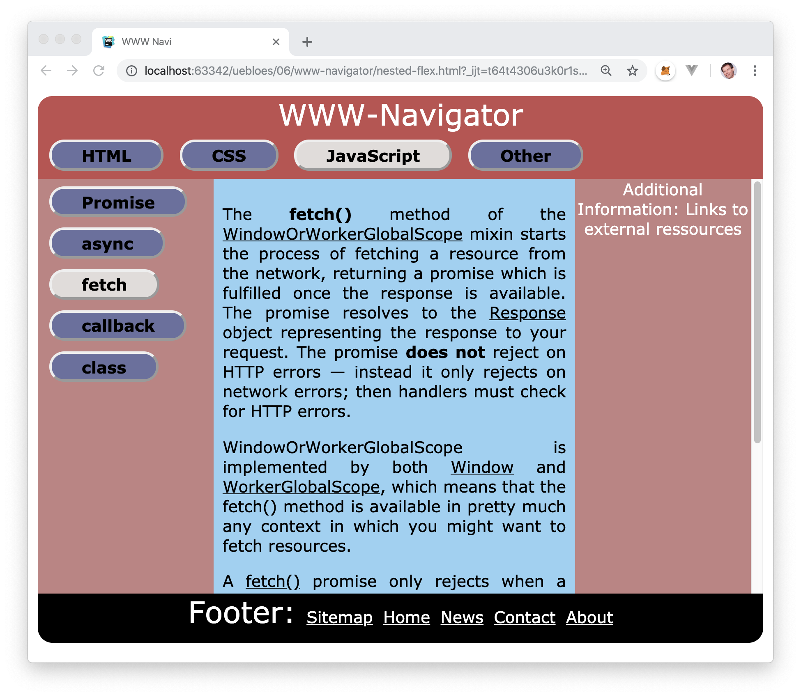

8.3. WWW-Navigator
Schreiben Sie einen Navigator für die Fachbegriffe des WWW zu den Oberthemen HTML, CSS und JavaScript. Im Hauptmenü sollen diese 3 Oberthemen zur Auswahl stehen. Im Untermenü soll eine zugehörige Liste von Fachbegriffen zum jeweiligen ausgewählten Oberthema stehen. In der Mitte soll eine Dokumentation zum ausgewählten Fachbegriff erscheinen.
Schreiben Sie in HTML und CSS nur den responsiven Rahmen für einen solchen WWW-Navigator. Dabei können Sie auch ein schöneres Layout als das hier gezeigte erstellen. Die Inhalte sollen in einer JSON-Datei extern gelagert werden. Mit der fetch-API soll die JSON-Datei asynchron nicht-blockierend geladen werden, und zwar nur einmal, nicht mehrfach. (d.h. Sparen Sie Internet-Bandbreite.) Sobald die Inhalte angekommen sind, sollen sie im Browser auch sofort angezeigt werden.
Fügen Sie selbst in die JSON-Datei zusätzliche Inhalte zu Themen der Vorlesung als Strings beispielhaft ein. Wenn Sie Inhalte aus fremden Quellen kopieren, so schreiben Sie bitte stets die Quelle als externe Ressource hinzu. Diese soll dann auf der rechten Seite im WWW-Navigator erscheinen.
